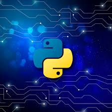

HTML (HyperText Markup Language) is the standard language used to create and structure web pages. It uses a system of elements and tags to define different parts of a webpage, such as headings, paragraphs, images, links, tables, and forms. HTML is not a programming language but a markup language that provides the foundation for web development. HTML works alongside CSS (for styling) and JavaScript (for interactivity) to create dynamic and visually appealing websites. An HTML document starts with , followed by ,
, and sections. The contains metadata, while the contains the main content visible on the webpage. Browsers interpret HTML code to display webpages properly. The latest version, HTML5, introduced new features like semantic elements, multimedia support (audio & video), and improved form handling, making it more efficient for modern web applications.SS (Cascading Style Sheets) is a stylesheet language used to control the design, layout, and overall visual presentation of web pages. It works alongside HTML to enhance the appearance of a website by defining styles for elements such as colors, fonts, spacing, backgrounds, borders, and positioning. Unlike HTML, which structures the content, CSS focuses on styling and allows developers to create visually appealing and user-friendly web designs. One of the key benefits of CSS is its ability to separate content from design, making it easier to maintain and update websites. By using external stylesheets, developers can apply the same styles to multiple pages, ensuring consistency across an entire website while reducing redundancy in the code. CSS operates based on a cascading priority system, meaning styles can be applied in different ways, including inline styles, internal stylesheets, and external stylesheets. The cascade determines which style takes precedence when multiple rules apply to the same element. CSS also introduces the concept of selectors, which help target specific elements on a webpage. These selectors can be simple, such as targeting elements by their tag names, classes, or IDs, or more advanced, using pseudo-classes and pseudo-elements to refine styling. With the evolution of CSS, modern features such as Flexbox and Grid have made it easier to create complex layouts that adapt to various screen sizes and devices, making responsive design an essential part of web development. Another powerful aspect of CSS is its ability to create animations and transitions, enhancing user experience by adding motion and interactivity without relying on JavaScript. Features like keyframes, hover effects, and transformations allow developers to create dynamic web pages that engage users. Media queries further extend the capabilities of CSS by enabling styles to adjust based on screen width, ensuring a website remains visually appealing on desktops, tablets, and mobile devices. The latest advancements in CSS, particularly in CSS3, have introduced new properties such as box shadows, gradients, and custom variables, giving designers even more creative freedom. As web technologies continue to evolve, CSS remains an essential tool in modern web development, shaping how websites look and function across different platforms.
JavaScript is a powerful and versatile programming language used primarily for web development to create dynamic and interactive web pages. It allows developers to add functionality beyond static HTML and CSS by enabling user interactions, animations, form validation, and real-time content updates. JavaScript runs directly in web browsers, making it an essential tool for front-end development. With the help of frameworks and libraries like React, Angular, and Vue.js, JavaScript has become even more efficient for building complex web applications. It is also widely used in back-end development with environments like Node.js, allowing developers to create server-side applications and APIs. This flexibility makes JavaScript a crucial language for full-stack development, as it can be used on both the client-side and server-side. One of JavaScript's key strengths is its event-driven and asynchronous nature, which allows web applications to respond to user actions instantly. Through technologies like AJAX and the Fetch API, JavaScript enables real-time data fetching without needing to reload the entire webpage. It also supports object-oriented and functional programming paradigms, making it adaptable to various coding styles and project requirements. JavaScript is easy to learn for beginners but powerful enough for advanced programmers, offering features like closures, promises, and async-await to handle complex tasks. With the rise of modern development trends, JavaScript is now used beyond web browsers, including mobile app development with React Native, desktop applications with Electron, and even game development using frameworks like Phaser. As web technologies continue to evolve, JavaScript remains one of the most important and widely used programming languages in the world. It plays a crucial role in creating smooth and engaging user experiences across different platforms. With ongoing improvements and updates through ECMAScript standards, JavaScript continues to introduce new features that enhance performance, security, and usability. Because of its vast ecosystem and strong community support, JavaScript is a go-to choice for developers looking to build innovative and scalable applications. Whether for simple websites, advanced web applications, or large-scale enterprise solutions, JavaScript continues to shape the future of digital experiences on the internet.
Python is a high-level, versatile programming language known for its simplicity, readability, and ease of use. It is widely used in various fields, including web development, data science, artificial intelligence, automation, and software development. One of the reasons for its popularity is its clean and straightforward syntax, which makes it an excellent choice for beginners while still being powerful enough for experienced developers. Python follows an object-oriented programming approach, making code more modular and reusable. Its vast collection of libraries and frameworks, such as NumPy, Pandas, TensorFlow, Django, and Flask, allows developers to work efficiently across different domains. Whether building web applications, analyzing large datasets, or training machine learning models, Python provides the necessary tools and flexibility. Another key strength of Python is its cross-platform compatibility, enabling developers to write code that runs seamlessly on different operating systems like Windows, macOS, and Linux. Python's strong support for automation and scripting makes it a go-to choice for system administrators and DevOps professionals. It is widely used for automating repetitive tasks, managing servers, and even testing applications. Python also plays a significant role in scientific computing and research, as it provides powerful libraries for statistical analysis, data visualization, and computational modeling. Its ability to handle large amounts of data and interact with databases makes it a preferred language for backend development and big data processing. With its active and supportive community, Python continues to evolve through regular updates and improvements. The language follows a philosophy of simplicity and readability, making it accessible to a broad audience, from students and hobbyists to professionals and researchers. Python’s ability to integrate with other languages and technologies enhances its versatility, making it an essential tool in modern software development. As technology advances, Python remains at the forefront, driving innovation in artificial intelligence, machine learning, cybersecurity, and cloud computing. Its widespread adoption across industries ensures that it will remain one of the most in-demand programming languages for years to come.